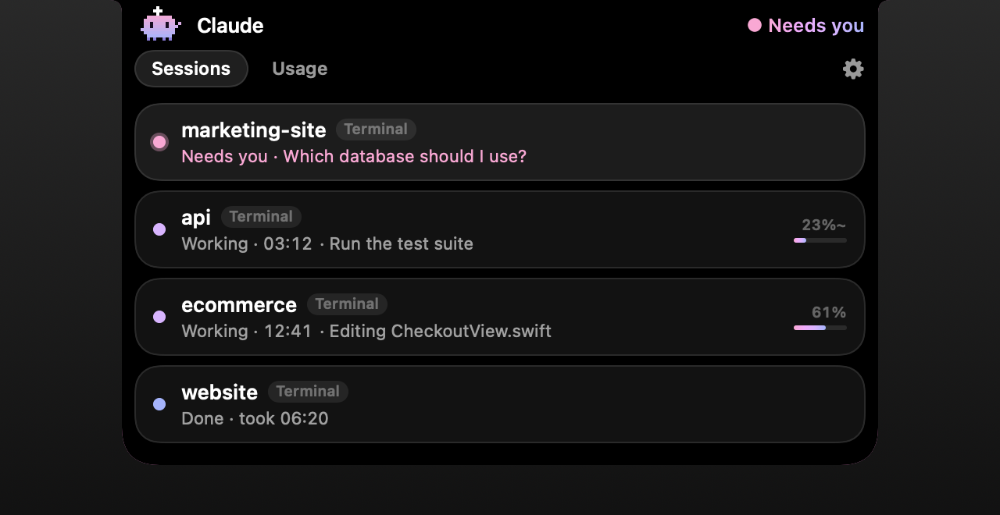

For people who give Claude more than one thing to do
Many tasks.
One notch.
Hand Claude Code a refactor, a test suite and a deploy at the same time, then get on with your day. The notch keeps watch over every task, and taps you only when one needs you.
Free & open source · macOS 14+ · Apple Silicon · Nothing leaves your Mac
How it works
Start a run. Walk away.
Claude Notch listens to Claude Code's own hooks. No screen scraping, no terminal plugins.
1
Ask for something big
Start Claude Code in Terminal, the Claude app, or your IDE.
2
Go do anything else
The critter types away in your notch with a live "working for" timer.
3
The notch glows pink
The moment Claude has a question, it expands and shows it to you.
4
Answer in one click
Pick an option or type a reply. Claude gets back to work.
Every session, one glance
Which Claude needs you? Never a guess.
Run as many Claude Code sessions as you like. The one waiting on you always jumps to the top.
- Needs you, working, done. Every session, named after its project.
- What Claude's doing right now: "Editing CheckoutView.swift", "Run the test suite".
- One click back to the right Terminal, Claude app or IDE window.
- A little celebration when a long task finishes. Quick replies stay quiet.

Usage limits
Know what's left before you hit the wall.
Straight from Claude Code, never made up. Estimates are labeled; anything missing says so.
Current session · 5-hour
0%
Resets in 2h 14m
Weekly · 7-day
0%
Resets Tuesday
Context per session
0%
checkout · verified
Plan limits appear for Claude Pro and Max in Terminal sessions. Example values shown.
Private by design
Nothing leaves your Mac.
No account, no server, no analytics. It's open source, so you can check.
Local-only bridge
Claude Code talks to the app over a private socket only your user account can open. No network ports.
Sees only what it needs
File names and short descriptions. Never your prompts, code or shell commands.
Never approves for you
Permission prompts always stay in Terminal. The notch just points you there.
Works where you do
Terminal, Claude app or IDE.
| Terminal | Claude app | IDE extensions | |
|---|---|---|---|
| Working / needs you / done, timer | ✓ | ✓ | ✓ |
| Answer questions from the notch | ✓ | Alert + jump to app | Alert + jump to IDE |
| Plan usage (5-hour / weekly) | ✓ Pro & Max | — | — |
| Context usage | ✓ | Estimated | Estimated |
Install
Set up in a minute.
Free and open source. Download, open, click Connect Claude Code.
- Download the latest release and unzip it.
- Drag Claude Notch into Applications (or your own ~/Applications folder).
- Open it. The first time, macOS may say it can't verify the developer, because we're not yet notarized by Apple. Open System Settings → Privacy & Security, scroll down and click Open Anyway.
- Click Connect Claude Code in the notch, then restart any Claude Code sessions that are already open.
Prefer the terminal?
Build from source with Apple's free Command Line Tools:
git clone https://github.com/REPO.git
cd REPONAME
./scripts/build-app.sh --installOr clear the download warning yourself:
xattr -dr com.apple.quarantine "/Applications/Claude Notch.app"FAQ
Is it really free?
Yes. Claude Notch is MIT-licensed open source. There's no account, subscription or tracking.
How does it know what Claude is doing?
On connect, it adds a few hooks to Claude Code's settings file (~/.claude/settings.json). Your original file is backed up first. Claude Code runs a tiny helper at each step, and the helper passes a short event to the app over a local socket. Disconnect removes the hooks again.
Can I answer questions from the Claude app or VS Code?
Those apps show their own question dialogs, so the notch alerts you and takes you straight there instead. Answering right in the notch works for Claude Code in Terminal. If you don't answer in the notch within two minutes, the question appears in Terminal as usual.
Which Macs does it work on?
Apple Silicon Macs on macOS 14 Sonoma or later. On Macs without a notch, it sits in the middle of the menu bar.
Will it slow down my Mac or Claude?
No. The app is native Swift and uses around 60 MB of memory. It's event-driven, so nothing polls in the background, and each hook call takes about 30 milliseconds. Tool-by-tool updates run in the background so Claude never waits on them.
macOS says it can't verify the developer. What do I do?
That's because the app isn't notarized by Apple yet. Open System Settings → Privacy & Security and click "Open Anyway". You can also build it yourself from source.
The notch says it's connected but shows nothing, or macOS says "notch-hook" can't be opened.
Update to the latest version, open it and click Connect again, then restart your Claude Code sessions. On version 0.1.0, macOS blocked the helper that Claude Code runs. To fix that version without updating, run xattr -d com.apple.quarantine ~/Library/Application\ Support/ClaudeNotch/bin/notch-hook in Terminal.
Is this made by Anthropic?
No. Claude Notch is an independent community project and isn't affiliated with or endorsed by Anthropic. Claude is a trademark of Anthropic.
Claude's working.
You don't have to watch.
Open source · MIT · Local-only